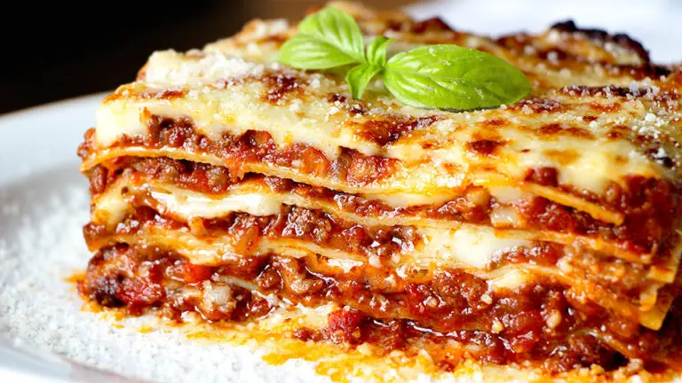

Una clásica lasaña boloñesa casera lleva tres preparaciones principales: la salsa boloñesa, la salsa bechamel y el armado con las láminas de pasta
Conocé esta receta de lasagna de carne. Rica, fácil y natural. Aquí te dejamos los ingredientes y el paso a paso para prepararla.